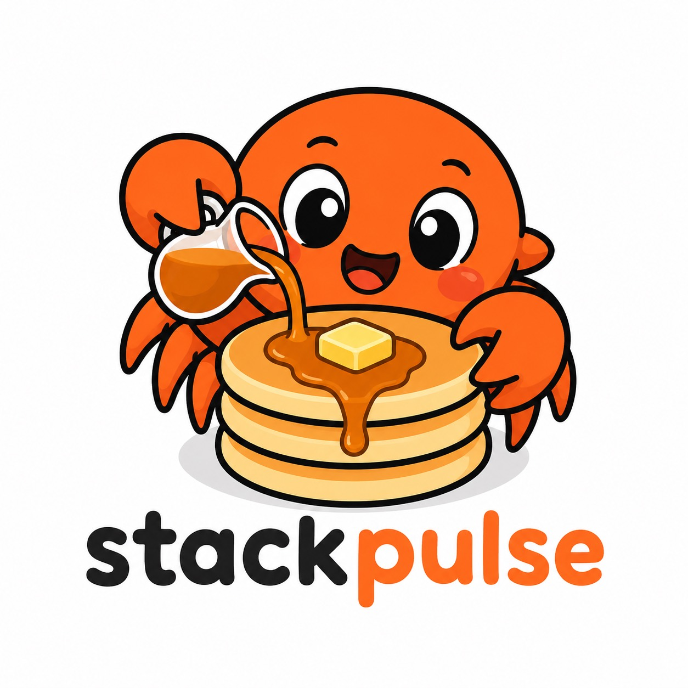

01 / API
Record and resolve a profile
Types, builders, and examples for recording a process and resolving its frames.
Rust library for Linux perf_event
Sample native, Python, and kernel stacks with perf_event.
Store them compactly, replay them with bounded memory, and resolve
symbols when the recording is complete.

Documentation
API docs, recording recipes, internals, and the SPULSE format.
01 / API
Types, builders, and examples for recording a process and resolving its frames.
02 / Guides
Capture startup, follow children, select symbols, diagnose loss, and aggregate stacks.
03 / Format
Version compatibility, record ordering, truncation recovery, and bounded replay.
04 / Operations
Kernel requirements, permissions, feature flags, diagnostics, and release history.